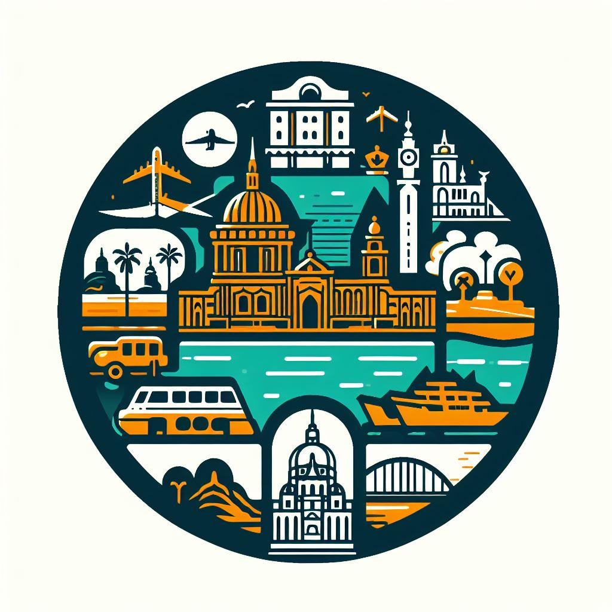

TURISTEO

Descubre y comparte los rincones más fascinantes del mundo con nuestra aplicación.
Añade tus propios lugares de interés y encuentra joyas ocultas recomendadas por otros viajeros apasionados.
¡Explora el mundo a través de los ojos de la comunidad de TURISTEO!
Made by Daniel Luque Gallardo